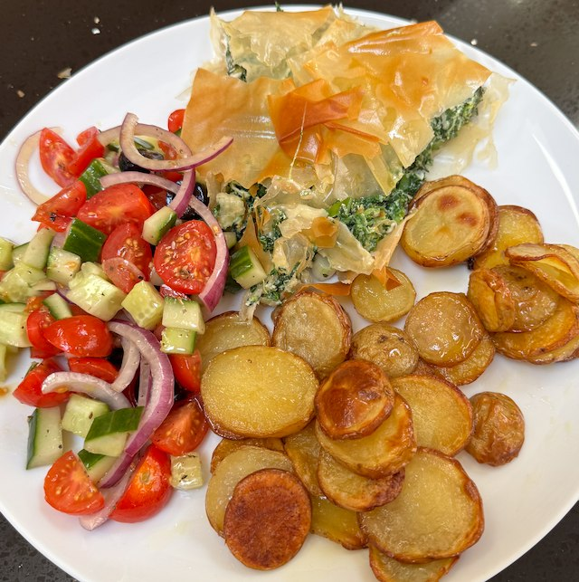

Spanakopita

Serves: 4
Cook Time: 1 hour
By Hugh Fearnley-Whittingstall from the Guardian 2011-10-15. Serve with greek salad (but omit the feta), and scalloped potatoes.
Ingredients
- 1kg frozen spinach, thawed, squeezed, chopped and dabbed dry with kitchen paper
- 1 bunch spring onions, finley chopped
- 1 small bunch parsley, finley chopped
- 1 small bunch dell, finley chopped
- 300g feta cheese, cubed
- 250g ricotta
- nutmeg, grated
- salt and pepper
- 3 eggs, beaten
- 100ml olive oil
- 12 sheets filo pastry (probably 2 packets)
Method
Add spinach, spring onion, parley, dill, feta, ricotta, nutmeg, salt, pepper to a bowl and mix. Add eggs and mix some more.
Brush dish with olive oil, add sheets of filo, brushing with olive oil until you have laid down 7 pieces. Fill with the filling. Then top with the remaining filo, brushing with olive oil as you go.
Cook in oven for 30 min on 160°C fan.